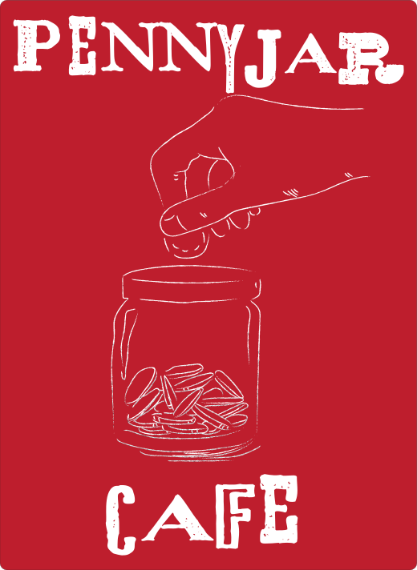

<!doctype html>  
<html lang="en
   <link rel="stylesheet" href="https://use.typekit.net/gze7van.css"></html>
<link rel="stylesheet" href="https://use.typekit.net/skj7vau.css">
<link rel="stylesheet" href="style.css">
<meta charset="UTF-8">
<meta name="viewport" content="width=device-width, initial-scale=1">
<title>About</title>
</head>
<body>
   <div class="container">
      <header>
         <h1>
            <a href="index.html">
            
            </a>
         </h1>
         <nav>
            <ul>
               <li class="selected"><a href="about.html">About</a></li>
               <li><a href="menu.html">Menu</a></li>
               <li><a href="contact.html">Contact</a></li>
            </ul>
         </nav>
      </header>
      <main>
         <article>
            <figure>
               
            </figure>
            <p> Tucked in the heart of San Luis Obispo, PennyJar Café is a warm neighborhood haven inspired by the simple joy of small moments. What started as a tiny idea scribbled on a napkin—“save your pennies for something that matters”—has grown into a cozy gathering place where locals, students, and wanderers alike share good coffee, good food, and good company. </p>
            <p> At PennyJar, we believe every cup counts. Our baristas craft each drink with care, sourcing beans from small-batch roasters and creating seasonal flavors inspired by the Central Coast. Whether you're settling in with a book, catching up with friends, or grabbing a quick pick-me-up before exploring downtown SLO, we aim to make every visit feel a little special.</p>
            <p> With its warm wood accents, sunlit windows, and a real penny-filled jar on the counter, PennyJar Café blends charm, creativity, and community into one inviting space. Come by, slow down, and savor the moments that add up. </p>
         </article>
      </main>
      <footer>
         <p>© All rights reserved. PennyJar, 2025.</p>
      </footer>
   </div>
</body>
</html>